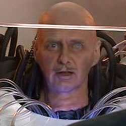

| Home | The Doctors | The Companions | The Villains |
|
|||
Max Capricorn Max Capricorn appears in the Tenth Doctor story "Voyage of the Damned". He is the owner of a luxury spaceship cruiseliner company, but is voted out by the other owners of the company and plans to get his revenge by crashing one of his ships into the Earth, killing all life on the planet as well as the 2000 people on board; selling his shares, he will earn enough to retire and see the remainder of the company in prison for mass murder. Due to his advanced age (he had been running his company for more than a hundred years), he has been reduced to a head in a tank, a cyborg dependent on life support (the common prejudice against cyborgs may have played a part in his removal from his company). Astrid Peth stops his plan by pushing him into the live nuclear storm drive, sacrificing herself in the process. |